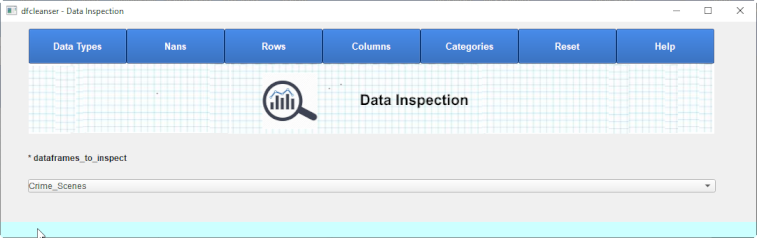

Data Inspection
Data Inspection is defined to provide the ability to do a high level inspection of a pandas dataframe.

-
Data Types
-

-
Nans
-

-
Rows
-

-

-

-
Commands
- Scroll Rows Down
- Scroll Rows Up
- Scroll To Specific Row ID
- Open Dataframe In Excel
- Reset Chapter
Scroll to a specific Row ID.
Open the current dataframe as an excel file.
-
Columns
Columns shows a list of columns in the dataframe and allows you to review data on them or cleanse them.

-
Column Graphs
Columns shows a list of graphs.


-
Categories
Category Columns
Category Columns show a table of the current category columns in the dataframe.
To modify a category column click on the corresponding Column Name.

Category Candidate Columns
Category Candidate Columns show a table of the columns in the dataframe with a limited number od uniques.
To change a column to category click on the corresponding Column Name.